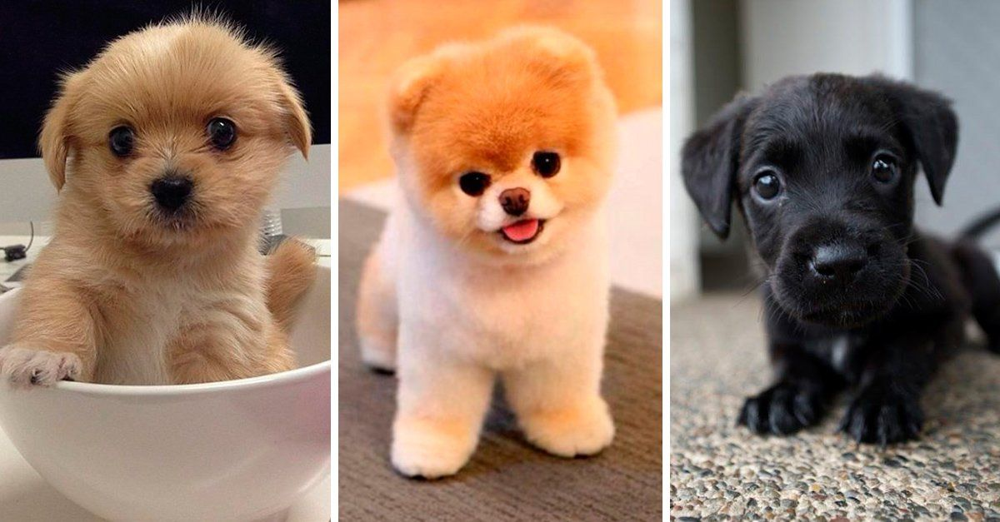
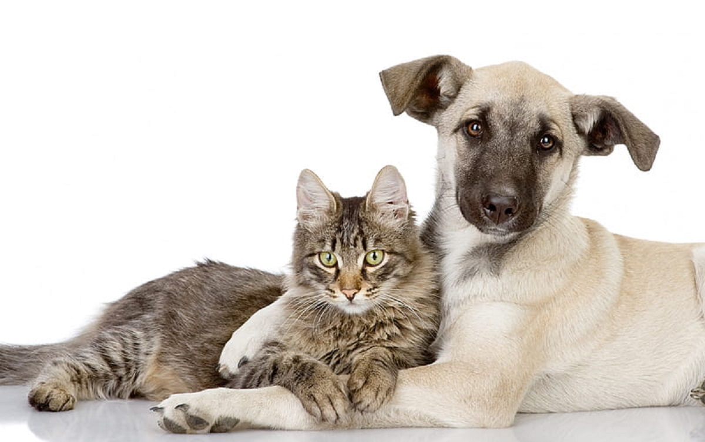
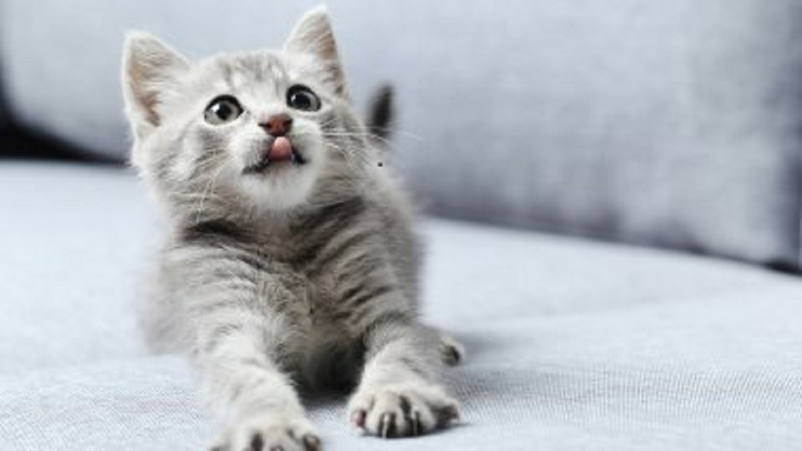
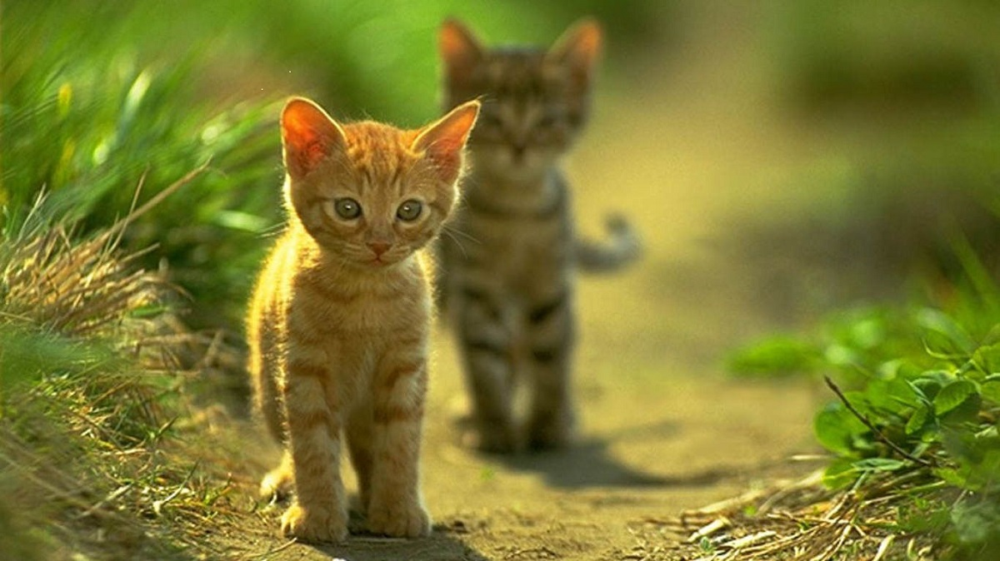

<!DOCTYPE html>
<html>

<head> 
    <meta charset="utf-8">
    <meta name="viewport" content="width_device-width,initial-scale-1.0">
    <title>PERRITO AKEMARU</title>
    <link href="https://fonts.googleapis.com/css2?family=Lobster&family=Pacifico&display=swap" rel="stylesheet">
    <script src="https://ajax.googleapis.com/ajax/libs/jquery/3.3.1/jquery.min.js"></script>
	<link rel="stylesheet" type="text/css" href="estilos4 (1).css">

          <br>
            <br>
            <br> <br>
            
        </body>
        &nbsp;&nbsp;
        <br> <br>
        <h1 style="color:rgb(182, 128, 28);text-align: center;">PERRITO AKAMARU </h1>
      </header>	
     <nav>  
       <div class="logo"></div>
  	   <a class="btn">
       <span></span>
        <span></span>
        <span></span>
        </a>
        
	   <div class="menu">
      
      <a href="index3 (2).html">INICIO</a>
		  <a href="adopta.html">ADOPTA</a>
      <a href="donaciones.html">CONTACTOS</a>
      
      <a href="nosotros.html">NOSOTROS</a>
      <a href="contactos.html">SHOPING</a>
    
    </nav>   
      <div class="slider">
        <div class="images">
          <input  type="radio" name="slide" id="img1">
          <input type="radio" name="slide" id="img2">
          <input type="radio" name="slide" id="img3">
          <input type="radio" name="slide" id="img4">
          </a>
         </a>
         </a>
         </a>
         
         >
         

        </div>
        <div class="dots">
         <label  for="img1"></label>
         <label for="img2"></label>
         <label for="img3"></label>
         <label for="img4"></label>

        </div>
        <h2 style="padding: 0%;">Nuestra misión es esterilizar a los animales de la calle, como solución al problema de sobre población y abandono de estos mismos. Por eso hacemos campañas mensuales de esterilización en distritos de población vulnerable.
        </h2>
        <div class="side_cat">
          <br>
          <span class="t4 pink"><strong>Asociación civil sin fines de lucro</strong></span><br><br>
          <span class="t3 black">Nuestra misión es rescatar animales de la calle en pésimas condiciones, curarlos, esterilizarlos y darlos en adopción. Tenemos un albergue con capacidad para albergar un maximo de 85 perritos y gatitos de manera adecuada según sus necesidades, sin tenerlos hacinados.</span></div>
            
          <div class="side_dog">
          <br>
          <span class="t4 blue"><strong>No somos un Albergue eutanásico</strong></span><br><br>
          <span class="t3 black">Los animales no tienen un limite de tiempo para permanecer en el albergue, si no llegan adoptantes para algunos casos, ellos se quedan con nosotros hasta el fin de sus días. Tenemos perritos de todas las edades desde cachorritos hasta viejitos, todos reciben trato personalizado según lo que necesiten.</span></div>
          <div style="clear: both; margin-bottom: 30px;"></div>
       </div>
       <div id="redes_sociales">
        <a href="https://www.facebook.com/Animales-SOS-Bolivia-291784267638625/" target="_blank" class="social facebook">facebook</a>
        <a href="https://twitter.com/animalessos?lang=es" target="_blank" class="social twitter">instagram</a>
        <a href="http://bit.ly/2xoh6y3" target="_blank" class="social youtube">youtube</a>
        </div>
       
</article> 

  <script type="text/javascript">
        $(".btn").on("click", function(){
            $('.menu').toggleClass("show");
        });
    </script>
</body>

<html>
